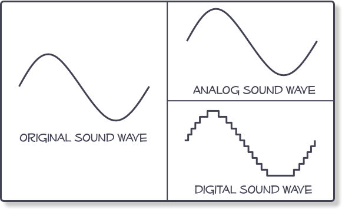

Digital lyd Refers to the reproduction and transmission of sound stored in a digital format. This includes
CDs as well as any sound files stored on a computer. In contrast, the telephone system (but not ISDN) is based
on an analog representation of sound.
Audio compression (data), a type of lossy or lossless compression in which the amount of data in a recorded
waveform is reduced to differing extents for transmission respectively with or without some loss of quality,
used in CD and MP3 encoding, Internet radio, etc.
Dynamic range compression (DRC) or simply compression is an audio signal processing operation that reduces
the volume of loud sounds or amplifies quiet sounds thus reducing or compressing an audio signal's dynamic range.
Compression is commonly used in sound recording and reproduction, broadcasting,[1] live sound reinforcement and
in some instrument amplifiers.
Digitization is the process of converting information into a digital format . In this format, information
is organized into discrete units of data (called bit s) that can be separately addressed (usually in multiple-bit
groups called byte s). This is the binary data that computers and many devices with computing capacity (such
as digital camera s and digital hearing aid s) can process.
Audio and video digitization uses one of many analog-to-digital conversion processes in which a continuously
variable ( analog ) signal is changed, without altering its essential content, into a multi-level (digital) signal.
The process of sampling measures the amplitude (signal strength) of an analog waveform at evenly spaced time
markers and represents the samples as numerical values for input as digital data.

